墨鱼桌搭 使用说明书
墨鱼桌搭是一款低功耗的电子墨水屏桌面摆件，可显示天气、日程和画报，并实时展示室内温湿度。
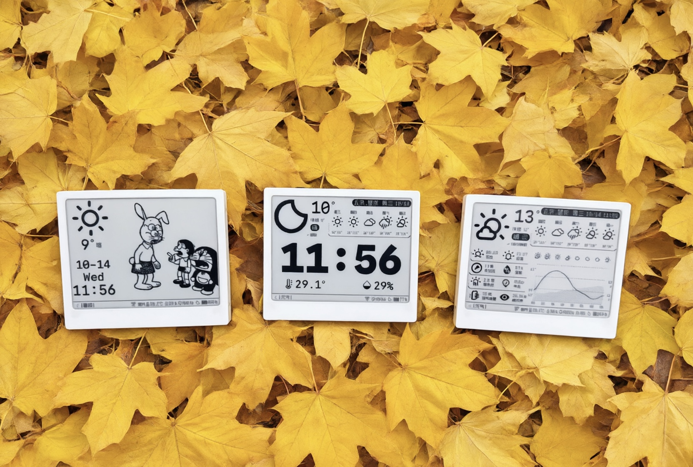
一、认识设备
1. 三个按键
所有操作都通过一个三向拨轮完成。拨轮位于屏幕背面左后方、一块向内凹陷的椭圆区域里。它支持三种动作：上拨、下拨、按下（下文简称"上""下""中键"）。
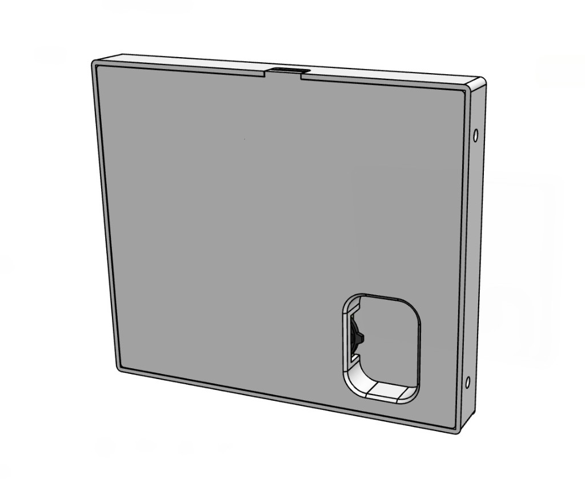
| 操作 | 通用作用 |
|---|---|
| 向上 / 向下拨动 | 切换选中项；部分页面有专属功能（见各应用说明） |
| 中 单击 | 确认 / 进入 |
| 下 长按（约 1 秒） | 返回上一页 |
| 中 长按（约 1 秒） | 页面专属功能，如强制刷新、打开列表 |
选中的菜单或按钮下方会出现一条黑色下划线。
2. 开机与关机
- 没有电源键，也没有关机：只要有电，设备就一直在运行。空闲时它会自动休眠，拨动按键就能直接使用，不需要手动开机。
- 什么时候会开机：电池耗尽后接上 USB 线充电，或者在设置中选择"重启"，设备都会重新开机。
- 开机后会做什么：先进入主菜单；如果已经配置过 Wi-Fi，还会自动联网校准时间。
- 开机后请进入一个应用：主菜单不会自动休眠，开机后请进入天气、日历或画报页面，以免白白耗电。
- 屏幕有画面，不代表设备在运行：墨水屏断电后画面仍会保留。判断设备是否在运行，可以拨动按键看有没有反应，或者看状态栏的时间是否在走。
3. 底部状态栏
除主菜单外，每个页面底部都有状态栏。左侧是页面标题，右侧依次为：
- Wi-Fi 图标：已连接 / 连接中 / 热点配置中 / 未连接。平时显示"未连接"是正常的，详见第五章问答。
- 室内温度、湿度、气压：来自设备内置传感器，约每分钟更新一次；气压单位为百帕（显示为
1013p）。 - 时间
- 休眠图标：显示设备当前是休眠还是唤醒状态。
- 电池：显示电量百分比；充电时显示闪电图标，接通电源且已充满时显示插头图标。
没有安装传感器时，温湿度和气压不显示。
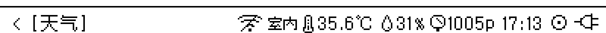
4. 省电与自动刷新
- 自动休眠：在天气、日历、画报页面，停止操作约 5 秒后，设备会进入休眠。屏幕内容保持不变，时钟照常每分钟走动。休眠时按键会直接生效，不用先唤醒；插拔充电线也能唤醒设备。
- 按需联网：设备只在获取数据时才打开 Wi-Fi，取完立即关闭。
- 整点更新：每天 6:00–21:00 的每个整点，设备会自动更新天气、日程和画报；22:00 到次日 6:00 不联网，以免夜间打扰并节省电量。
- 数据缓存：30 分钟内重复进入页面会直接使用缓存，不会重新联网。
日常使用建议把设备停在天气、日历或画报页面。主菜单和设置页面不会自动休眠，耗电较多。
二、主菜单
主菜单有四个应用：天气、日历、画报、设置。用"上/下"选择，按"中键"进入；在任意页面长按"下"可逐级返回。
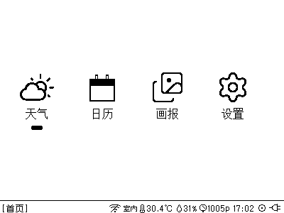
三、首次配置
首次使用只需三步：进入设置 → 用手机配置 → 校准时间。
第 1 步：进入设置
- 进入主菜单，用"上/下"选中 设置，按"中键"进入。
- 选中 Web 设置，按"中键"进入。
- 屏幕上会显示热点名称（格式为
Billboard-XXXX）和一个二维码。
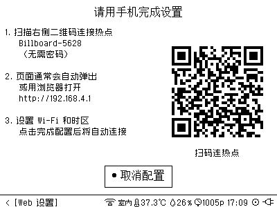
第 2 步：用手机完成配置
- 用手机扫描屏幕右侧的二维码，或者在手机 Wi-Fi 列表里找到
Billboard-XXXX直接连接。无需密码。 - 连接后通常会自动弹出设置页面。如果没有弹出，用手机浏览器打开屏幕上显示的地址（一般是
http://192.168.4.1）。 - 设置页面分为五个标签，只有 Wi-Fi 和时区是必填项：
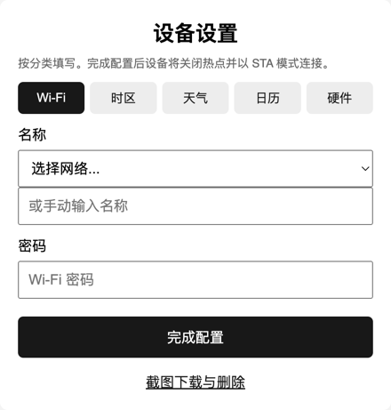
| 标签 | 填写内容 |
|---|---|
| Wi-Fi（必填） | 从下拉列表选择网络，或手动输入名称；再填写密码 |
| 时区（必填） | 先选地区，再选城市。默认是"亚洲 / 上海" |
| 天气 | 数据源：国内选"大陆"，国外选"海外"；城市名只用于在屏幕上显示；纬度、经度决定天气查询的实际位置（获取方法见下方"如何获取经纬度"） |
| 日历 | 填写 CalDAV 服务器、账号、密码（例如飞书日历的服务器是 caldav.feishu.cn）。不用日历可以不填 |
| 硬件 | 屏幕型号，默认 A0-2。一般无需修改，只有屏幕出现残影或噪点时才需要调整 |
4. 点击 完成配置。看到"配置已保存"后，即可关闭手机页面。
填写提示：
- 再次配置时，页面会自动带出已保存的内容，只需修改需要变动的项。
- 日历密码留空表示保留原密码；服务器、账号、密码三项全部清空则删除日历配置。
- 修改屏幕型号后，设备会自动重启。
如何获取经纬度：
任选一种方式，查到想看天气的地点（如家或公司）的坐标：
- 电脑：打开 高德坐标拾取器，搜索地址或在地图上点击位置，右侧会显示一串坐标，如
116.4569,39.9972。注意顺序是"经度,纬度"：逗号前的是经度，逗号后的是纬度。 - 手机：打开 Google 地图，长按目标位置，顶部搜索框会显示坐标，如
39.9972, 116.4569。这里顺序是"纬度, 经度"，与高德相反。
填写时注意：
- 只填数字，不要带"°"、"N""E"等符号或单位，例如纬度
39.9972，经度116.4569。 - 保留 2–4 位小数即可。天气按区域预报，精确到小区级别已经足够。
- 快速核对：在中国境内，纬度在 18–54 之间，经度在 73–135 之间。如果两个数填反了，页面会提示"请填写有效的纬度和经度"，或者显示的是别处的天气。
- 南半球的纬度、西半球的经度填负数，例如悉尼纬度
-33.87，纽约经度-74.01。 - 坐标是"度分秒"格式（如
39°59'50"）时，需要换算成小数：度 + 分 ÷ 60 + 秒 ÷ 3600。例如 39°59'50" ≈ 39.9972。 - 纬度和经度都不填时，默认显示"北京·望京"的天气。
第 3 步：等待联网，并校准时间
- 保存后，设备会关闭热点并自动连接 Wi-Fi。连接成功后自动返回设置页面，状态栏的 Wi-Fi 图标变为"已连接"。
- 如果屏幕显示"连接失败"，请检查 Wi-Fi 名称和密码，然后按"中键"点击 重新配置。
- 回到设置页面，进入 NTP 校时，等待提示"校时完成"。
首次配置后请务必校时一次，否则时钟可能不准，画报也会提示"时间未同步"。以后设备重新启动时都会自动校时。
NTP 校时
进入后自动联网校准时间，并显示当前 时间 和 时区。
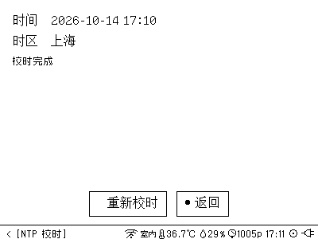
- 成功后显示"校时完成"，可以点击 重新校时 或 返回。
- 未联网时，会提示前往 Web 设置。
四、应用功能
1. 天气
页面上半部分固定显示：
- 当前天气图标、温度、体感温度、天气状况
- 更新时间，如"刚刚""15分钟前"。旁边显示 ✓ 表示最近一次更新成功，✗ 表示更新失败、当前显示的是旧数据
- 右上角的城市和日期
- 未来 5 天的天气和最高 / 最低温度
下半部分有两种模式，向上或向下拨动切换：
- 详情模式（默认）
- 左侧 8 项指标：日出、日落、风力（级数和风向）、湿度、紫外线（低 / 中 / 高）、气压、空气质量（优 / 良 / 中 / 差）、能见度
- 右侧未来 24 小时曲线图：温度曲线、湿度，以及每隔几小时的天气图标
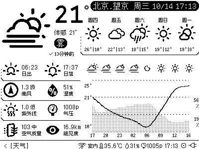
- 时钟模式
- 大号时钟，下方是室内温度和湿度
- 这时底部状态栏会隐藏重复的温湿度和时间
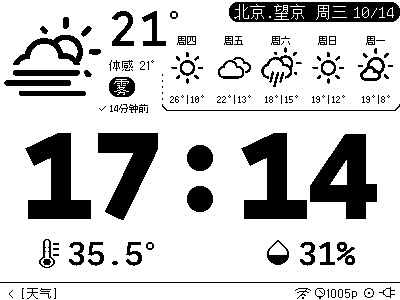
操作：
- 长按"中键"：强制刷新，忽略缓存，立即重新获取天气。
- 获取失败时，页面会显示原因（如"未连接 Wi-Fi""获取天气失败"）以及 重试 / Web 设置 / 返回 按钮。用"上/下"选择，按"中键"确认。
每次进入天气页面都会回到详情模式。
2. 日历
- 左栏：当前天气、温度、体感温度、日期、星期和时钟。
- 右栏：未来 7 天的日程时间线。今天的日程标注为"今天"，其他日子显示"几月几日 + 星期"。每条日程显示开始时间，全天日程显示"全天"。
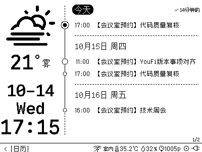
操作：
- 向上拨动：往后翻一页。已经是最后一页时，会自动加载再往后 7 天的日程。
- 向下拨动：往前翻一页。
- 长按"中键"：强制刷新日程和天气。
- 右下角的页码（如
2/3）表示当前是第几页。
说明：
- 需要先在 Web 设置的"日历"标签里填写 CalDAV 账号。
- 支持一个账号下的多个日历，也支持重复日程；已取消的日程不会显示。
- 每次最多显示 40 条日程。
3. 画报
- 左栏：天气、温度、日期、星期和时钟。
- 右栏：一幅黑白画报（漫画或名句）。
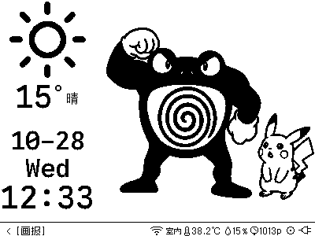
整点自动换图：每天 6:00–21:00 的每个整点，会随天气一起从当前系列里随机换一张新图；22:00 到次日 6:00 不换图。同一天内不会重复出现已经看过的图。
进入画报页面时，会先显示上次的那张图，到下一个整点再换新图。
操作：
- 向上或向下拨动：换一张（从当前系列中随机挑一张没看过的）。
- 长按"中键"：打开系列列表，可以换一个系列：
- 拨"上"向上移动，拨"下"向下移动，右下角显示当前序号；
- 按"中键"确认，系统会立即换上该系列的一张图；
- 再次长按"中键"可取消，不做更改。
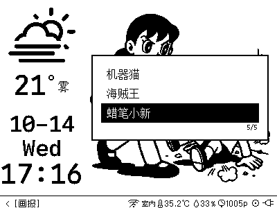
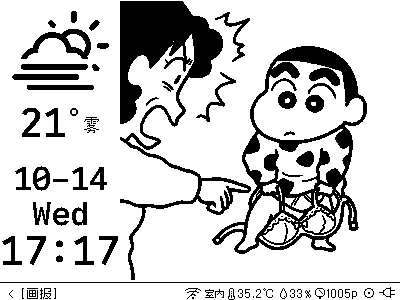
- 选好的系列会被记住，之后每次整点都从该系列中换图。
如果提示"今天都看过了"，说明当前系列今天的图已经全部看完，可以换一个系列，或者等到明天。
4. 设置
设置共有 5 项，超过一屏时，左右两侧会出现箭头，提示还有更多选项。
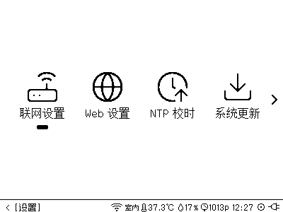
Web 设置
用手机修改 Wi-Fi、时区、天气位置、日历账号和屏幕型号，操作方法见第三章。
- 按"中键"点击 取消配置，或长按"下"退出页面，都会关闭热点，放弃本次配置。
Wi-Fi
查看网络 状态、名称、IP 地址。页面会根据当前状态显示不同按钮：
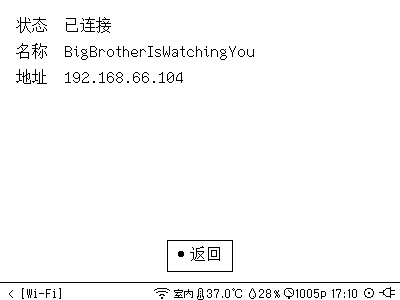
- 重连：已经保存了网络但没有连上时，点击它重新连接。
- 去 Web 设置：还没有配置网络，或者需要修改网络时使用。
- 返回
设备可以保存多个 Wi-Fi。每在 Web 设置里保存一个新网络，就会加入列表。换了环境后，设备会自动连接附近已保存的网络。
系统更新
页面显示 当前版本 和 更新说明。
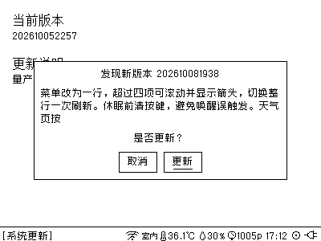
- 点击 检查更新。
- 如果有新版本，会弹窗显示版本号和更新内容，点击 更新 开始，点击 取消 放弃。
- 更新过程中会显示进度。这时不能退出页面，也不要断电。
- 完成后提示"更新完成，点击确定重启"，按"中键"确认重启即可。
如果提示"已是最新"，说明无需更新。
重启
选中后按"中键"，设备立即重启。
五、常见问题
- Q1：状态栏的 Wi-Fi 图标经常显示"未连接"，是不是坏了？
- A：不是。为了省电，设备只在获取数据时才打开 Wi-Fi，平时会关闭。只要天气和日程能正常更新，就说明网络没问题。
- Q2：充满一次电能用多久？
- A：充满电后，停在天气、日历或画报页面静态放置，一般可以使用 5–7 天。以下情况会缩短续航：
- 频繁操作按键、切换页面，或者频繁长按"中键"强制刷新；
- 长时间停在主菜单或设置页面，这些页面不会自动休眠；
- Wi-Fi 信号较弱，每次联网耗时更长；
- 环境温度较低。
- Q3：手机连上
Billboard-XXXX后，没有弹出设置页面怎么办？ - A：用手机浏览器手动打开屏幕上显示的地址（一般是
http://192.168.4.1）。如果手机提示"此网络无法上网"，选择"保持连接"即可。如果仍然打不开，请在设置中选择"重启"，重启后重新进入 Web 设置 再试一次。 - Q4：在 Wi-Fi 下拉列表里找不到我家的网络？
- A：设备只支持 2.4GHz 网络，不支持 5GHz。也可以在下拉框下方手动输入网络名称。
- Q5：配置完成后，屏幕显示"连接失败"？
- A：通常是密码填错，或者设备离路由器太远。请检查后点击"重新配置"。注意 Wi-Fi 名称和密码都区分大小写。
- Q6：时间不准，或者画报提示"时间未同步"？
- A：进入"设置 → NTP 校时"手动校准一次。重启设备也会自动校时。另外，请确认 Web 设置中的时区是否正确。
- Q7：天气显示的地点不对？
- A：天气位置只由纬度和经度决定，城市名仅用于显示。请按第三章"如何获取经纬度"重新查询并填写，重点检查经度和纬度是否填反。
- Q8：天气或日程长时间没有更新？
- A：先看更新时间旁的标记，✗ 表示最近一次更新失败。可以长按"中键"强制刷新。另外，22:00 到次日 6:00 设备不会自动联网，这期间不更新属于正常现象。
- Q9：日历提示"未配置日历账号""找不到日历"或"同步失败"？
- A：请在 Web 设置的"日历"标签中检查服务器地址、账号和密码。有些服务（如飞书）需要使用专门生成的 CalDAV 账号和密码，而不是登录密码。
- Q10：屏幕偶尔整屏闪烁一下，正常吗？
- A：正常。墨水屏每隔一段时间、切换页面或模式时，会全屏刷新一次来清除残影。
- Q11：屏幕出现明显残影、噪点或显示异常？
- A：可能是屏幕型号设置不匹配。请在 Web 设置的"硬件"标签中尝试其他型号，保存后设备会自动重启。
- Q12：按键后屏幕反应慢，感觉有延迟？
- A：这是墨水屏的特性，属于正常现象：
- 墨水屏刷新本身就比手机屏幕慢。普通刷新约需不到 1 秒；切换页面、切换天气模式、换画报时会整屏刷新，需要 2–3 秒，期间屏幕会闪烁。
- 屏幕显示"加载中""正在更新"等提示时，设备正在联网获取数据，需要等待几秒到十几秒。这期间重复长按"中键"强制刷新不会生效。
- 快速连续拨动时，按键会排队依次执行，可能出现"翻过头"的情况。
- Q13：状态栏没有显示室内温湿度？
- A：说明没有检测到温湿度传感器，其他功能不受影响。
- Q14：画报提示"未连接 Wi-Fi"或"画报下载失败"？
- A：请先确认网络正常，然后向上或向下拨动重试。下载失败时，屏幕会继续显示上一张图。
- Q15：系统更新中途失败了怎么办？
- A：按提示点击"确定"重启后，再次进入"系统更新"重新检查即可。更新过程中请保持供电，不要退出页面。
- Q16：怎样更换 Wi-Fi，或者修改其他设置？
- A：随时可以进入"设置 → Web 设置"重新配置，已保存的内容会自动带出，只需修改需要变动的项。
- Q17：想看新的画报系列，怎么申请？
- A：欢迎加入 QQ 群提出想看的系列（见第六章）。如果呼声较高，群主会考虑加入新的画报系列。
六、交流与反馈
使用中遇到问题、有功能建议，或者想分享你的桌面摆件，欢迎加入 QQ 群 TT Studio（群号 703058070）一起交流。
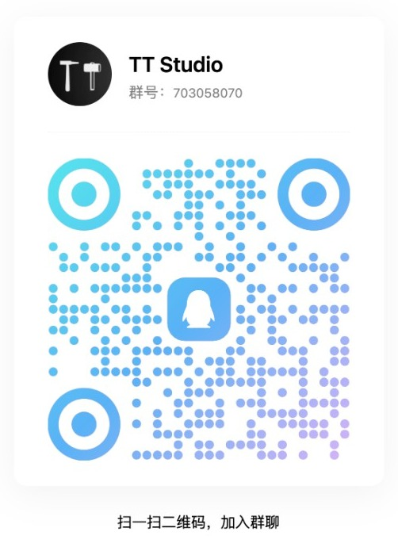